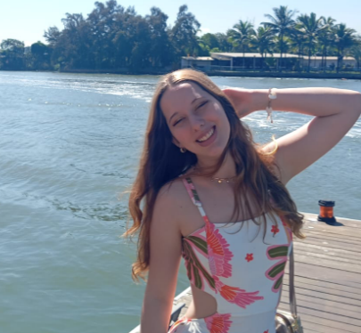
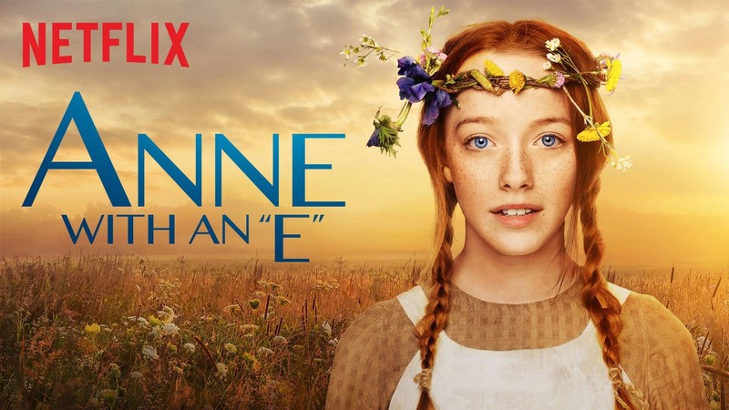

Olá, meu nome é Ludmila!
Resumo da minha história
Eu nasci e cresci no Espírito Santo, mais especificamente em Vila Velha. Atualmente moro com meus pais, minha irmã e uma pinscher (que é a mais legal de toda a família). Desde pequena sou apaixonada por tudo que envolve tecnologia e adoro entender como esse universo funciona. Sempre joguei muito online e acho que isso foi o 'start' que eu precisava para começar a faculdade que estou fazendo hoje: Ciência da Computação.
Eu escolhi trabalhar como monitora de transporte escolar, acompanhando as crianças até a escola. Foi a melhor opção enquanto ainda não consigo um estágio, devido ao período da faculdade, pois me deixa com tempo livre para estudar, diferente de um trabalho de período integral. Esse, no entanto, não foi o meu primeiro emprego: trabalhei por três meses na loja de um familiar, o que me trouxe conhecimentos importantes e melhorou bastante minha comunicação. Precisei sair porque era em período integral.
Quando pequena, eu fazia vídeos para o YouTube. Já experimentei alguns esportes, como vôlei, balé, kickboxing e outros, mas nunca me encontrei verdadeiramente neles. Para não dizer que não pratico nenhum esporte, corro na praia quando consigo tempo. Sou uma pessoa bem caseira e a maioria das coisas que sei fazer aprendi em casa mesmo. Gosto bastante de cozinhar, faço maquiagens, penteados e unhas, e às vezes ajudo minha mãe nos trabalhos sociais da igreja, como catequista.
Música Favorita
Eu adoro música, de paixão. Sou bem eclética, gosto de tudo e mais um pouco, mas sou muito fã de indie, que se popularizou quando entramos em quarentena, na pandemia. A que eu mais escutava, e ainda escuto, é "Are You Bored Yet?", da banda Wallows. Vou deixar ela aqui embaixo, caso queira ouvir.
PS: O começo é meio estranho, então se quiser ouvir a música vá para o segundo "0:23"
Clique aqui para ver a letra da música
Caso prefira fazer o download, clique aqui
Série Favorita
Também gosto muito de séries e filmes, no momento a minha série favorita é "Anne with an "E"", original da plataforma netflix
Trajetória Acadêmica
Durante o meu fundamental, mudei de escola constantemente, me lembro de estudar na escola Oceano Atlântico, Sesi, Nep e Up. No ensino médio, me mudei para a escola estadual Francelina Carneiro Setúbal. Hoje sou estudante de Ciência da Computação na Universidade Vila Velha (UVV). Para o futuro, meu objetivo é me formar pela UVV, e quero fazer uma pós graduação, mas ainda estou pensando em qual àrea, visto que ainda estou no primeiro período.
Ainda sou caloura faz pouco tempo, mas já participei do inova week na minha faculdade que acontece do **15 a 18 de setembro**. O tema desse ano foi **"AI Facilities: For Best Generation"**, abordando o impacto da inteligência artificial nos negócios, produtos, processos, sistemas e serviços.
O evento busca estimular a aplicação de metodologias ativas de aprendizagem, fomentar a cultura da inovação e do empreendedorismo e incentivar a integração entre os estudantes dos diversos cursos da UVV.
Matérias Atuais
No primeiro período do curso estou tendo as seguintes matérias:
- Construção de Software para Web
- Foca em criar sites e aplicações web, programando tanto a interface que o usuário vê (front-end) quanto a lógica do servidor (back-end).
- Design e Desenvolvimento de Banco de Dados I
- Ensina a modelar, criar e gerenciar bancos de dados usando a linguagem SQL para armazenar e organizar informações de forma eficiente.
- Experiência e Interface com o Usuário
- Trata de projetar sistemas fáceis e agradáveis de usar, focando em como o usuário se sente e interage com a tecnologia.
- Fundamentos de Tecnologia da Computação
- Apresenta os conceitos básicos de hardware, software e como os computadores representam e processam informações.
- Lógica para Computação
- Desenvolve o raciocínio lógico formal, essencial para a construção de algoritmos e a resolução de problemas em programação.
- Textos Científicos: Aspectos Metodológicos e Linguísticos
- Ensina a escrever e formatar trabalhos acadêmicos e artigos científicos seguindo as normas e a estrutura da metodologia científica.